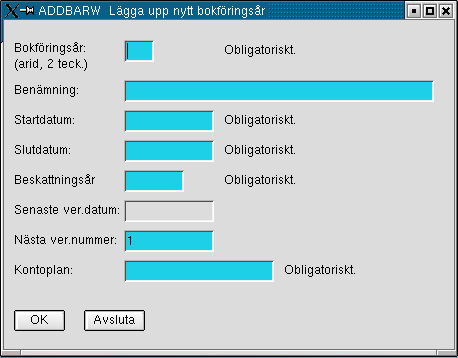

Order/Lager/Fakturering för Linuxsystem
Användarmanual
Kapitel Ekonomi
Version 0.4.4
2006-05-03
This program is free software; you can
redistribute it and/or modify
it under the terms of the GNU General Public License as published by
the Free Software Foundation; either version 2 of the License, or
(at your option) any later version.
Copyright 2004 Jan Pihlgren.
Bokföring.
Registrering av verifikat.
Räkenskapsår.
Nytt räkenskapsår.
Kontoadministration.
Nya konton.
Begreppsförklaringar.
BOKFÖRING
Registrering av verifikat.
Efter inmatning av bokföringsår görs kontroll att bokföringsåret
är upplagt. sätts automatiskt. Verifikationstext skrivs in av
användaren.Radnr sätts automatiskt. Inmatning av Kontonr kan göras på
två sätt; klicka på önskat kontonr i Kontoförteckningen eller skriva in
kontonr manuellt. Efter inmatning av Kontonr görs kontroll att kontonr
finns för aktuellt bokföringsår. D/K skrivs av användaren. D för en
debetkontering och K för en kreditkontering. Belopp registreras av
användaren. På rad 001 ska verifikatets totalbelopp skrivas.
Registrering av leverantörsfaktura.
Efter det att man fyllt i ett fält och tryckt Enter
så flyttar sig markören (cursor) till nästa fält som ska fyllas i eller
där inskrivet värde ska accepteras eller ändras. Skriv in
leverantörsnummer.
RÄKENSKAPSÅR
Nytt räkenskapsår.
 Ange
bokföringsår med två tecken. Benämningen anger
räkenskapetsårets omfattning, t ex 2001-01-01 -- 2001-12-31.
Ändra räkenskapsår.
Kontoadministration
Nya konton.
BEGREPPSFÖRKLARINGAR
Bokföringsår: Tvåställig bokstavskombination som anger vilket
bokföringsår som avses.
Registrering av leverantörsfaktura.
Ändra räkenskapsår.

Om KSTÄLLE fylls i görs kontroll att kostnadstället finns registrerat
på aktuellt kontonr och aktuellt bokföringsår. Fältet får lämnas tomt.
Om SUBKONTO fylls i ska kontroll göras att subkonto finns registrerat
på aktuellt kontonr. Fältet får lämnas tomt. (Ej implementerat)
När man godkännt verifikationsrad så uppdateras Diff. När rad 001
registreras så förs samma belopp in i Diff. För varje påföljande rad som
registreras så minskas värdet i Diff med aktuell rads belopp.
Först när Diff är 0:- kan verifikationen godkännas.
Ifall man vill ändra något på det man skrivit in så markera önskat
radnr i rutan ”Registrerade verifikationsrader”. Raden flyttas då upp
till fälten för inmatning och ändring/redigering kan ske.

Programmet hämtar leverantörsdata och fyller i fälten
Leverantörens organisationsnummer,
Leverantörsnamn, Adress, Postnr, Postadress och Land. Dessa fält
går inte att ändra. Dessutom fylls fälten för Kundnummer, Registreringsdatum,
Betalningsvillkor, Momskod, Valuta, Valutakurs och Kontonr i.
Acceptera angivet Kundnummer eller ändra
värdet.Acceptera eller ändra Registreringsdatum.
Fältet Fakturadatum är från
början blankt. Ifall man då trycker Enter i detta läge så fylls datum i.
Datum blir då lika med registreringsdatum. Även fältet Förfallodatum fylls i med automatik.
Förfallodatum räknas fram genom att addera till antalet dagar i
betalningsvillkor till fakturadatum.
Fyll i Betalningsvillkor eller
acceptera angivet värde. I fall värdet ändras så ändras även
förfallodatum. Ändra angivet Förfallodatum
eller acceptera genom att trycka Enter. Fyll i OCRnummer. OCRnumret används av
bankerna i samband med betalning.
Fakturatext en är en kort
beskrivning över vad fakturan gäller. Fakturatexten kan vara maximalt
100 tecken.Bokföringsår ska anges
med två bokstäver enligt gällande kontoplan. Nu fylls fältet Verifikationsnr i. Fältet kan inte
ändras. Markören flyttar sig till fältet Momskod. När man trycker Enter fylls
fältet
I fältet Fakturabelopp anges
det belopp som står på fakturan. OBS!
I fakturans valuta. Beloppet ska anges med 1- 10 heltalssiffror och 2
decimalsiffror. Avsluta inmatningen genom att trycka Enter. Programmet
kommer att räkna ut beloppen för bokföring och fylla i fältet Bokfört belopp.
Bokfört belopp beräknas som Fakturabelopp * Valutakurs.
Angivet kontonr är ett för
leverantören föreslaget kontonr. Kontonumret kan ändras till önskat
kontonummer. Markören flyttar sig till fältet Bokfört belopp. Genom att trycka
Enter accepteras värdet och fälten Momsbelopp
och Kreditbelopp fylls i med
uträknade värden.
Momsbelopp beräknas som Bokfört belopp * Moms % / 100.
Kreditbelopp beräknas som Bokfört belopp – Momsbelopp.
Skriv in önskat Momskontonr.
Acceptera eller ändra fältet Momsbelopp.
Skriv in önskat kontonr i fältet Kontonr.
Acceptera eller ändra fältet Kreditbelopp.
Knappen OK blir aktiv och genom
att klicka på knappen OK accepteras faktura. Leverantörsreskontran
uppdateras och fakturan bokförs till huvudboken. Ett meddelande kommer
upp på skärmen som talar om att uppdateringen gått bra. Alla fälten
blankas ut och nästa leverantörsfaktura kan registreras.
Genom att klicka på knappen Avsluta avbryts transaktionen, ingen
uppdatering sker och programmet avslutas.
Till början
OLFIX använder en tvåstavig bokstavskombination (AA - ZZ) för att ange ett bokfäringsår.
Att använda en bokstavskombination för ange ett bokföringsår innebär att man inte behöver ta hänsyn till om det är ett normalt räkenskapsår eller ett brutet räkenskapsår. Man behöver ej heller bli frågande om till vilket kalenderår ett räkenskapsår tillhör.
Den tvåställiga bokstavskombinationen är nyckel och måste alltid anges.
Fyll i Startdatum med räkenskapsårets början, t ex 2001-01-01.
Fyll i Slutdatum med datumet för räkenskapsårets sista dag, t ex
2001-12-31.
Som Beskattningsår anges det årtal för vilket räkenskaperna ska
beskattas, t ex 2001.
Som Senaste ver.datum anges normalt räkenskapsårets första dag, t ex
2001-01-01.
Såsom Nästa ver.nummer anges vilket verifikationsnummer nästa
bokföringsverifikation skall åsättas, normalt anges 1. Fältet uppdateras
sedan i samband bedbokföringen.
I fältet Kontoplan anger man efter vilken kontoplan som
räkenskaperna/konteringarna är upprättad.
Efter detta är det dags att regstrera alla konton.
Tryck på TAB eller Enter för att hämta informationen om önskat bokföringsår. Ändra önskade fält och avsluta med att klicka på OK.
Innan nya konton kan läggas upp måste först kontrolleras att önskat
bokföringsår finns upplagt. I fall önskat bokföringsår icke finns måste
detta läggas upp först.

Bokföringsår = Tvåställig, unik bokstavskombination som refererar till avsett räkenskapsår.
Kontonummer = kontonummer enligt använd kontoplan.
Benämning = Beskrivning av kontonumret.
Manuell = Om kontot ska kunna användas för automatkontering (N) eller bara för manuell kontering (J).
Momskod = Refererar till vilken momskod (1- 5) i företagsregistret som kontot ska kopplas. I första hand konton som används för momsdeklaration.
SRUnr = Kod som skatteverket anger att ett konto ska referera till. Används i samband med deklarationer.
Kostnadsställe = Plats i en organisation som orsakat en kostnad.
Projekt = Projektnummer, Används i de fall kostnader för olika projekt önskas följas upp per projekt.
Subkonto = Underkonto till Kontonummer.
Kontoplan = Namn på kontoplan till exempel EUBAS97
Avsluta inmatning genom att klicka på knappen OK
Bokföringsår och räkenskapsår är synonymer i OLFIX.